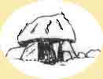

|
 |
VIBY i gamla tider |
 |
|||
| . |
. |
. | .Uppdaterad 10 mars 2004 | ||
|
Styrelsen Om föreningslivet Om jordbruk Om hantverk Bygdemål
|
Över 80 personer
på årets första medlemsmöte
Snacka om intresse! Till medlemsmötet den 20 januari var starttiden
utsatt till klockan 18:30 – Klockan 17:00 var första medlemmen på plats -
och strax därefter kom nästa – och nästa - och nästa…. i tät följd - och
redan klockan 17:45 hade de flesta av de 84 deltagarna anlänt. Läs vidare i Sven-Arne Ströms redogörelse under Medlemsmöten |
"Det exakta året när Göranssons café, eller Café Vänta som en del ironiskt ville kalla det, startades, vet jag inte riktigt. Men att nittonhundra-talsseklet var ungt när detta grundades vet jag, och jag vet också med vemod, att det lades ned i slutet av 1950-talet" skriver föreningens sekreterare när han tecknar en minnesbild av det gamla fiket. |
Och här kan Du anmäla dig själv
|
||
|
och låt det bli samma livligt besökta plats som det gamla fiket |
|||||
| . | |||||
|
|
Vill Du bli medlem i vår förening anmäl dig till
. Om Du har minnen, bilder eller annat som Du vill att föreningen skall jobba vidare med kontakta
|
||||
|
Många hem pryds av en tavla på församlingskyrkan. Ovan ser vi ett exempel på hur en sådan kan se ut. Den visar Gustaf Adolfs kyrka med interiör samt kröns av en bild på den vid tiden tjänstgörande prästen. Det finns inga uppgifter om hur gammal tavlan är eller vilken präst vi ser. Och när byttes kortavlan ut? Hjälp oss att tidsbestämma den. Skriv till Fiket eller e-posta och berätta vad ni vet. Klicka på bilden så får ni en förstoring.
|
|||||
| Webbansvarig: olle.wohlin | |||||